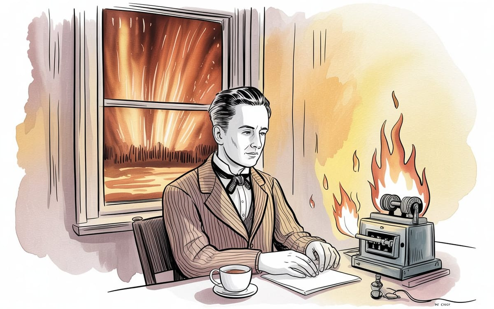

:: Now begins a story...
May I present to you, a finely curated section of a fine collection of the wonderful web we weave with a weekly roundup of bits and pieces from the far corners of the super information highway that I like to call — Token Wisdom ✨


"There's no sense in being precise when you don't even know what you're talking about."
— John von Neumann,

Editor's Notes 📆
Week 13 of 52 // March 22nd 🧿 28th, 2026
This week's thread is verification: what it means that a machine formally caught a logical error in a physics paper for the first time, what it means that a theorized particle may open a door to a fifth dimension, and what it means that we've spent decades building institutional review processes that check calculations but not arguments. The FCC voted copper out of existence and fiber into law — a 60-year arc from a 1966 lab result to a federal mandate. A compute chip built on graphene arrives not as faster silicon but as a different physical category. Tristan Harris puts arithmetic to the governance problem: 8 billion people, 5 CEOs, no mechanism for accountability at that ratio. And Peter Thiel put $2 billion on a cow collar.
The common thread: the review process was always weaker than we assumed. The fifth dimension isn't a metaphor — it's the most precise description available of where we currently are.
Where the future arrives before we understand the present... becomes a gift 🎁

🔮 Pearls of Wisdom, The Latest Edition...
Get smart, fast. If you're pressed for time and want to keep up to date!
Enjoy The Newest Latest, A Closer Look & Time Well Spent!

🎉 Newest / Latest
100% Authentic Humanly Chosen

The Verification Threshold: When Machines Start Reading the Work
This week's collection maps the moment institutions stop being sufficient. The FCC legally mandates the end of copper. A particle theorized to link our spacetime to a fifth dimension reframes what dark matter is. AI formally catches a logical error in a peer-reviewed physics paper — for the first time. The Copyright Office grants legal authorship to a machine. A graphene compute chip arrives that is not silicon improved but silicon replaced. And Tristan Harris counts the ratio: 8 billion people, 5 CEOs, zero institutional mechanism. The verification assumption was always the load-bearing wall. This week it moved.
- FCC Eases Copper Network Rules to Accelerate Fiber Optic Upgrades
The Federal Communications Commission voted to phase out regulations protecting copper networks, legally accelerating the transition to fiber optic infrastructure. This is not a market development — it is the moment a 60-year technological arc becomes structural law. The copper era ends not with a market collapse but with a regulatory vote. Read more at Bloomberg - Particle Could Be Portal to Fifth Dimension — What Is Dark Matter
Scientists propose a new class of fermion particle that acts as a mediating structure between four-dimensional spacetime and a fifth spatial dimension — and argue this explains dark matter without requiring direct detection. Dark matter is not a particle we haven't found. It may be a leakage signature from a dimension we can't directly access. Read more at Popular Mechanics - Computer Finds Flaw in Major Physics Paper for First Time
A formal theorem-verification language — designed to check mathematical arguments for logical completeness — was applied to a peer-reviewed physics paper and identified a structural error. Not a calculation error. A flaw in the argument. The peer review process has checked math for 400 years. It has always been weaker on structure. Read more at New Scientist - What Happens When AI Starts Checking Mathematicians' Work
A startup translated a modern mathematical proof into a formal verification language — and the scientific community's reaction was not celebration. The question being avoided: if machines can now check the logical structure of arguments, why haven't we been deploying them? The answer to that question is the real story. Read more at Scientific American - U.S. Copyright Office Grants Registration to AI-Generated Artwork
The Copyright Office has granted legal registration to artwork generated by AI. This is not a creative judgment. It is a legal determination about agency, authorship, and intellectual property — made without broad public deliberation — that rewrites who can own what. Read more at Harvard Journal of Sports and Entertainment Law - 60 Years of Fiber Optics: How a Carrier of Light Underlies Much of the Modern World
Kao and Hockham's 1966 paper on optical fiber transmission loss became, this week, the substrate of a federal mandate. The 60-year arc from basic science to physical law is one of the cleaner documented examples of how foundational research becomes infrastructure — and why the timeline is never as fast as the funding cycle wants. Read more at The Conversation - Unconsciousness, Consciousness, Computsciousness
The human psyche may be reorganizing around a third register. Unconscious. Conscious. And now: computsciousness — what happens when computation joins the psyche structurally, not as a tool beside it but as a layer within it. The question of whether this is metaphor or mechanism is the question. Read more at Psychology Today - Magnets Turn Random Snapping in Soft Metamaterials Into Repeatable Sequences
By magnetizing pre-cut elastic materials, researchers demonstrated control over the sequence in which mechanical snapping events occur — programmable physical behavior without circuits, without code, without electronics. The mechanism is the material. Read more at TechXplore - NOAA's National Weather Service Eyes the Cloud for Next-Gen Applications
The National Weather Service is migrating to cloud infrastructure for next-generation forecast applications. The meteorological data problem — real-time, global, high-resolution, time-sensitive — is one of the more demanding compute environments in existence. Where NWS goes, the architecture follows. Read more at NOAA - Peter Thiel's Founders Fund Backs AI Cow Collar Startup at $2 Billion
Peter Thiel's Founders Fund has backed an AI livestock monitoring startup at a $2 billion valuation. The cow collar is now a serious asset class. The underlying bet is on agricultural data density and the gap between what precision livestock monitoring can predict and what the industry currently captures. Read more at Archive
👁️ A Closer Look
Unearthing gems in the digital landscape.

Because in the ever-evolving tech world, there's always more to learn and laugh about.
The Sky Has Been Warning Us Since 1859
In July 2012, a Carrington-class coronal mass ejection crossed Earth's exact orbital path and missed us by nine days. Daniel Baker and colleagues measured it directly and published in Space Weather in 2013. The National Academy of Sciences had already put the damage at $2.6 trillion for North American infrastructure alone. Recovery time: years. Possibly a decade.
 🌶️ iamkhayyam
🌶️ iamkhayyam
"We didn't build a civilization since 1859. We built an antenna."


A Closer Look: Explorations in Technology
Weekly essay in the areas of blockchain, artificial intelligence, extended reality, quantum computing, and all the bits and pieces.

A Closer Look: Explorations in Technology
Weekly essay in the areas of blockchain, artificial intelligence, extended reality, quantum computing, and all the bits and pieces.


📺 Time Well Spent
Top Ten of the Time I Spend

The Geometry of Rejection
This week's selections orbit a single structural problem: the gap between being right and being recognized as right. An AI supercomputer built in the wrong decade. The Cassandra Paradox documented with data. A physicist describing dimensions nobody would fund. A forensic account of a man who mastered the performance of correctness while the record told a different story. The geometry of rejection is not random. It has a shape. These are the coordinates.
- This AI Supercomputer Was 30 Years Too Early
They wanted to build a machine that could think — and may have been right about everything except the timing, which is structurally identical to being wrong. The gap between a correct idea and a deployable idea is not a small gap. It is the entire problem. The question this video doesn't ask but should: how many correct ideas are sitting in that gap right now? Watch on YouTube - Why Society Rejects the Truly Intelligent
The Cassandra Paradox. Tall poppy syndrome. Confidence reads as arrogance until the prediction lands, at which point it reads as luck. This is not a cultural accident — it is a documented structural property of how groups manage perceived status threat. The video traces the mechanism without sentimentality. Watch on YouTube - MIT Physicist Jim Gates — DARPA, Warp Drives, Supergravity & Aliens on Jupiter
Jim Gates works on supersymmetry and supergravity. He has consulted for DARPA. He is not speculating when he discusses the theoretical physics of faster-than-light travel — he is working within the mathematics. Whether that mathematics describes physical reality is the open question. The difference between Gates and a crank is that Gates can show his work. Watch on YouTube - No One Can Explain the Biblical Destiny of Iran on This Timeline
A chronological analysis of Persian/Iranian references in Biblical texts, mapped onto a political timeline. The value here is methodological: what happens when you treat a text as a predictive model and test its outputs against historical record. Whether you accept the premise or not, the analytical structure is worth the time. Watch on YouTube - The Secret Spy Tech Inside Every Credit Card
The infrastructure of payment is also the infrastructure of surveillance. These are not separate systems. The architecture was not designed to separate them. Veritasium traces what is actually inside the card you use every day. Most people have signed terms of service for all of it. Watch on YouTube - 8 Billion People vs. 5 AI CEOs — with Tristan Harris
Tristan Harris's framing is arithmetic, not rhetoric: five people are making decisions that structurally govern billions, and the institutional mechanisms that exist for accountability — elections, courts, press, protest — were designed for human actors operating at human speed. None of those mechanisms apply here. The governance gap is not closing. It is widening. Watch on YouTube - Richard Feynman: Why It's IMPOSSIBLE to Predict Prime Numbers Exactly
Feynman's argument on prime unpredictability is not a curiosity — it is a load-bearing wall in cryptography, in number theory, and in the Shannon-Wakil result from two weeks ago. If you want to understand why the encryption-breaking algorithm published March 2nd matters structurally, start here. Watch on YouTube - Black Semiconductor — Integrated Graphene Photonics™ Technology
This is not a faster transistor. It is a different physical object. Graphene photonics compute using light, not electrons. The speed ceiling, the energy floor, and the heat problem are all different categories of problem than silicon addresses. If this architecture scales, it does not improve the current infrastructure. It replaces it. Watch on YouTube - Different Paths to Quantum Computers at Nvidia GTC
Four quantum computing systems. Four different underlying physical mechanisms. Superconducting qubits, trapped ions, photonic qubits, neutral atoms — each with different error rates, different operating temperatures, different scaling curves. The question is not whether quantum computing arrives. It is which physics wins, and on whose timeline. Watch on YouTube - Chamath Got Caught
A long-form forensic investigation into the gap between the stated record and the actual record — from Burger King to Facebook to Virgin Galactic SPACs to the retail investors who funded the round trips. The value is not the scandal. It is the documented mechanism: performed confidence accumulates institutional credibility faster than verified track record, the correction cycle is long, and the damage is asymmetrically distributed. Watch on YouTube

✨Token Wisdom
Knowledge Transmuted
In this edition, we traced the moment institutions stop being sufficient. The FCC legislated a 60-year technological arc into law. A machine caught the structural flaw that expert review had missed — not a wrong number, a broken argument. A particle proposal reframed dark matter not as something we haven't found but as something from a geometry we can't directly access. A graphene chip arrived that doesn't fit in the current hardware taxonomy. Tristan Harris put arithmetic to the governance problem and the number is not comforting. And Peter Thiel placed a $2 billion bet on a cow collar, which is either absurd or prescient, and those two options have the same external appearance until one of them is obviously correct.
The fifth dimension isn't a metaphor. It is the most honest description of where we are: the rules that governed our four familiar dimensions — authorship, verification, security, expertise — are no longer sufficient to describe the behavior of the system. Something has changed the geometry.

🌈💫 The Less You Know
The More You Learn
Latest Technologies & Innovations
- Fifth-Dimension Fermion Portal: A theorized class of particle that mediates interaction between four-dimensional spacetime and a fifth spatial dimension; proposed in a March 2026 paper as a structural explanation for dark matter without requiring direct detection of dark matter particles themselves
- Integrated Graphene Photonics (Black Semiconductor IGP™): A compute chip architecture that uses graphene-based photonic circuits rather than silicon-based electron transistors; processes information via light rather than electrical charge, with fundamentally different speed, energy, and heat profiles than all existing semiconductor architectures
- Formal Theorem Verification (Physics Application): The use of proof-assistant programming languages — designed to check mathematical reasoning for logical completeness — applied to peer-reviewed physics literature; first formally machine-identified structural flaw in a published physics paper confirmed March 2026
- Computsciousness: A term proposed in a March 2026 Psychology Today article to describe a theorized third register of the human psyche — alongside consciousness and the unconscious — formed as computation becomes structurally integrated into cognition rather than remaining an external tool
- Programmable Metamaterial Sequencing: A technique using magnetized elastic materials to control the order in which pre-cut mechanical snapping events occur; enables programmable physical behavior in materials without electronic components
Most Important Topics
- The Verification Gap in Peer Review: The first machine-identified logical flaw in a published physics paper raises a question the scientific community is not fully addressing: how many published arguments contain structural errors that calculation-based review would not catch, and why haven't formal verification tools been deployed systematically before now?
- AI-Generated Authorship and Legal Identity: The Copyright Office's decision to grant registration to AI-generated artwork is a legal determination about agency and ownership — made without broad public deliberation — that rewrites who can own what and on what basis
- The Governance Ratio Problem: 8 billion people, 5 CEOs, zero applicable institutional accountability mechanism. The democratic systems we rely on were designed for human actors at human speed. They do not apply at this ratio or this velocity
- Infrastructure as Law: The FCC's copper phase-out is the moment a technological transition becomes legally irreversible. Fiber is no longer a market preference — it is the mandated substrate of American telecommunications
- The Dark Matter Portal Hypothesis: Proposing a fifth-dimensional fermion as the structural explanation for dark matter generates falsifiable predictions. What is notable is the framing: dark matter is not a particle we haven't found yet, it is a leakage signature of a dimension we can't directly access
- The Chamath Pattern: The forensic value of the Chamath investigation is not the specific lies. It is the documented mechanism: performed confidence accumulates institutional credibility faster than verified track record, and the damage is asymmetrically distributed between the performer and the audience
Acronyms
- FCC — Federal Communications Commission: the U.S. regulatory agency governing interstate communications by radio, television, wire, satellite, and cable
- DARPA — Defense Advanced Research Projects Agency: the U.S. Department of Defense agency responsible for developing emerging technologies for national security use
- IGP — Integrated Graphene Photonics: Black Semiconductor's proprietary chip architecture combining graphene-based materials with photonic computing principles
- SPAC — Special Purpose Acquisition Company: a publicly traded shell company formed to acquire a private company, bypassing the standard IPO process
Technical Terms
- Fermion: A class of subatomic particle with half-integer spin that obeys the Pauli exclusion principle; includes quarks, electrons, and neutrinos; the fifth-dimension portal hypothesis proposes a new fermion category that mediates cross-dimensional interaction
- Supergravity: A theoretical framework combining supersymmetry with general relativity; predicts the existence of a gravitational supersymmetric partner particle (the gravitino) and provides a mathematical context for string theory and extra-dimensional physics
- Formal Proof Verification: The process of encoding a mathematical argument in a proof-assistant language (such as Lean or Coq) that mechanically checks every logical step for completeness and consistency; distinct from numerical simulation or statistical validation
- Photonic Computing: Information processing using photons (light particles) rather than electrons; potential advantages in speed and energy efficiency because photons travel at the speed of light and do not generate resistive heat the way electron currents do
- Tall Poppy Syndrome: A documented social phenomenon in which individuals who achieve notable success are subject to criticism or institutional suppression from their peer group; documented in organizational behavior research as a mechanism for managing perceived status threat
Just because Jon Snow knows nothing, doesn’t mean you have to.
Embrace the pursuit of knowledge to shape a better tomorrow. Sign up for more Token Wisdom and carry the torch of foresight into the fathomless domains of innovation and beyond.
"The fifth dimension isn't a metaphor. It's the most precise description available of where we currently are: the rules that governed our four familiar dimensions — authorship, verification, security, expertise — are no longer sufficient to describe the behavior of the system. Something has changed the geometry."
— Token Wisdom on the door that opened this week
Until next time: stay smart, and kind, and definitely stay weird!
🔮 Token Wisdom · 152nd Edition · Week 12 of 52 · March 15–22, 2026
Become a Token Wisdom subscriber
Illuminate your inbox with the light of knowledge. ✨

Thank you for cruising by the Cult of Innovation
We’re making some Stone Soup here. If you enjoyed this amuse-bouche of news compilations in bite-sized morsels, please share it with your friends and help feed a community. Mmmm. #nomnom.

Don't forget to check out our 2025 Rollup the Rim to Win Token Wisdom =)
 🌶️ iamkhayyam
🌶️ iamkhayyam